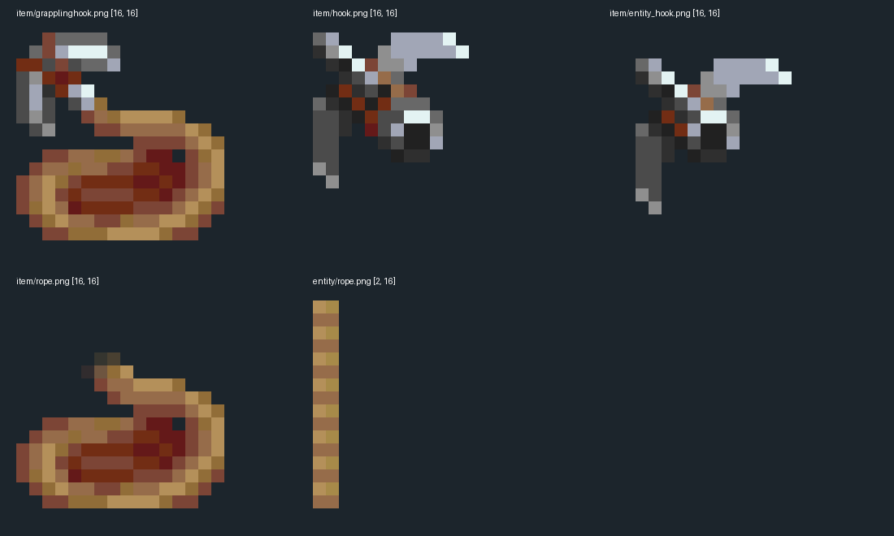

当前钩头不是直接绑定HOOK_TEXTURES画平面：活着的renderer分支给新栈写hook标签，ItemRenderer.getModel解析覆盖，再用NONE上下文绘制真实baked item。老平面代码整段被注释。
getTextureLocation返回的textures/entity/entity_hook.png在固定树不存在，但当前钩体绘制读item/entity_hook.png；不能因此断言实际钩体缺图。外部固定源研究，不是Dynasty新模型。0新参考，生产资源未动，未启动游戏。

当前钩头不是直接绑定HOOK_TEXTURES画平面：活着的renderer分支给新栈写hook标签，ItemRenderer.getModel解析覆盖，再用NONE上下文绘制真实baked item。老平面代码整段被注释。
getTextureLocation返回的textures/entity/entity_hook.png在固定树不存在，但当前钩体绘制读item/entity_hook.png；不能因此断言实际钩体缺图。最后一条hook=1覆盖优先，hook属性按标签是否存在而非boolean值真假。原生按列表倒序、每属性>=阈值匹配；attached=0不表示必须未挂接。
256种二值输入仅离线条件回放，未运行客户端；升级子模型与其全部贴图本批未读，不宣称整套外观闭合。held attached属性来自当前entity对应控制器且不是AirfrictionController，entity为null则0；它不是检查这根钩实体或当前栈本身。飞出钩getModel传null owner，由hook标签稳定选hook模型。
物理实体attached、控制器存在和物品覆盖状态是不同身份；不据此推导网络时序无误。hook模型明确使用grapplemod:item/entity_hook，rope模型使用item/rope；它们都继承handheld→generated。真正绳管则单独用textures/entity/rope.png。
textures/item/hook.png也是实际查看的备用资产，不能因为名字相近便认为当前hook JSON加载它。5张原始PNG的整数倍图实际查看：16×16物品靠冷灰钩头与暖棕绳圈区别，entity钩头省略绳圈；实体绳图仅2×16，暖色阶有编织方向。
这是1个既有机制家族的不同用途资源，不计5个新生物参考；不复制作者像素。generated不是自建厚3D钩爪。Forge同版本helper把builtin/generated送ItemModelGenerator；基面Z7.5..8.5、整图正反面及透明轮廓侧面来自PNG。
这是薄挤出像素物品；本批没有执行atlas、烘焙或GPU，也不把其薄片结构作为所有生物制作标准。实际绳段是四侧方管，half-width0.025，短于0.05的段跳过；当前调用taut固定1，因此每段一个纵向quad，不走16段垂弧。
此处只是视觉绳管，不代表物理折点数量或真实拉力；被注释的hookEntity.taut不生效。每根折段都把V从0铺到1，未按世界长度重复；2×16编织贴图会随段长拉伸。最后手端cap用V0.99..1，折点列表首尾分别换成插值钩位置与手端。
不同长度的纹理密度不自动一致；不把物理折线和固定密度绳纹混淆。角度消费者有实际单位不匹配：Vec.getYaw/getPitch明确toDegrees，renderer把其结果及45/-45/-90常量交给JOML setAngleAxis。JOML1.10.5接口单位是弧度。
仅记录参考源的静态单位边界，不修外部源码、不改Dynasty、不声称已测到实际朝向。官方API链接单独保存；不是新机制案例。钩体绘制缩放0.5后额外旋转，物品上下文是NONE；正常手持则继承handheld的一三人称左右手变换。两者不能拿同一角度截图互相证明持握正确。
源路径已经分开，真正手臂、FOV、动画和相机画面仍未运行。